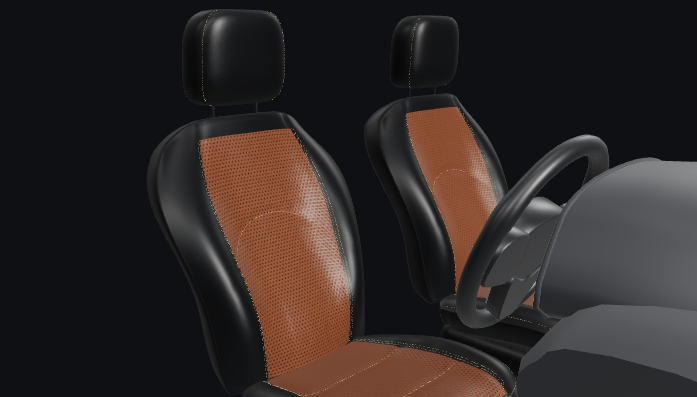

Skip to content
DESIGN REVIEW · R1
Recorded cabin views · not a live configurator
Review board ↗
AutoLab
Interior Studio
A considered interior. A personal expression.
Your specification
↗
THE INTERIOR STUDIO
Make it
personal.
Consider the whole. Then the smallest detail.
01
Material
02
Colour
03
Accent Thread
04
Composition
YOUR INTERIOR
Driver Hero

This preview could not load.
Retry
SIENNA BROWN / EXCLUSIVE BLACK
Captured configuration
01
Driver Hero
02
Cabin Pair
03
Cockpit & Dash
04
Stitch Detail